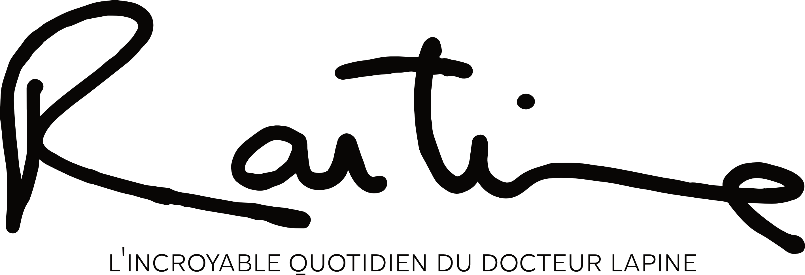

ROUTINE est un film qui traite de façon légère et burlesque le quotidien du médecin généraliste.
Remplaçant puis installé depuis un peu plus de 2 ans en tant que médecin traitant dans le territoire de l’Ain à proximité de Lyon, l’écriture du scénario a été d’une grande fluidité. En effet, la plupart des capsules humoristiques développées dans ce film, pour ne pas dire toutes, sont des histoires vraies ou inspirées de consultations que j’ai vécues durant ma carrière, débutante certes mais déjà riches en émotions.
Au-delà de son trait fortement humoristique, ROUTINE est un film qui se veut bienveillant envers tous les protagonistes du film, aussi bien patients que médecins. Il distille des faits du quotidien sans clichés, une tranche brute de la vie des patients; l’angoisse, le déni, la peur, l’incompréhension, l’anxiété, la gentillesse, l’écoute, l’admiration, le rejet... Toutes ces facettes de l’humain auxquelles fait face le médecin généraliste tous les jours.
Je souhaite, à travers ROUTINE, humaniser et créer de l’empathie envers le médecin généraliste afin de déconstruire les clichés autour du sacerdoce du praticien.
Le Dr LAPINE incarné par Tom Da Sylva est un médecin très investi auprès de ses patients, parfois un peu trop peut-être! Il peut enchaîner des journées difficiles avec beaucoup de sollicitations mais tout en gardant une forme de candeur et de spontanéité qu’on retrouve dans la scène de fin du film quand il s’adresse tendrement à sa fille Maëll en lui adressant un sourire las mais satisfait. On peut imaginer que le Dr LAPINE est un homme séparé qui rentre souvent tard du travail et qui mange assez régulièrement des coquillettes au ketchup préparées par sa fille, lorsqu’elle est à la maison. Je préfère laisser le mystère intact.
L'ÉQUIPE |
||
| Production, Scénario, | - | SLAMA Mounir |
| Réalisation, Direction artistique | ||
| Chef Opérateur | - | DUVAL Clément |
| Assistant Caméra | - | LENOBLE Guillaume |
| Ingénieur son | - | MORVELAT Nathan |
| Perche | - | RONDEAU Joachim |
| Chef Electro | - | GERBAL Alice |
| 1er Assistant réalisation | - | BAGRAMOVA Hugo |
| Équipe régie | - | LEGROS Alexandra BORNE Lothain BLANC Sarah |
| Photographe plateau | - | GABALI Shirley |
| Maquillage | - | SCHNEIDER Mathilde |
| Montage et étalonnage | - | GATTEGNO Cléo |
| Montage et animation générique | - | SENEAU Camille |
| Mixage et montage son | - | NAPPI Lorenzo |
Bande Originale |
||
| Composition | - | ESPERET Jérémie |
| Synthétiseur | - | LAMARCA Lionel |
| Contrebasse | - | LINCONTANG Christophe |
| Batterie | - | CHIAVARRO Maurizio |
| Studio d'enregistrement | - | JAZZ HOMES |
Casting |
||
| Docteur Lapine | - | DASYLVA Tom |
| Fille du Dr Lapine | - | BUSSY Maëll |
Les patients du Dr Lapine par ordre d'apparition |
||
| SPATH Cindy et BLASQUEZ Alain | BOUNMY Alice et CARDULLO Valéria | |
| SLAMA Mounir | BOUDIA Fatah | |
| FAUCHILLE Flore et GORISSE Léa | DUVAL Éléa | |
| DUMINY Françoise | TIXIER Johanna | |
| RICHARDIER Manoé et Léandro | MARAZITA Marie | |
| CALABRESE Laurence | TANCA Pauline | |
| Cyril MASSON Cyril | DISTEFANO Matthias | |
| DE COURVILLE Guillemette | DA SILVA Jorge | |
| DUBOCLARD Mathieu | VANDESTOCK Pierre | |
| BEURIER Armel | HARTMANN Hervé | |
Figuration - Patients Zombies |
||
| LA GRECA Lise (Momie) | Estelle | |
| BOIREAU Jérémie | BUSSY Mika | |
| CUZIN Charles | K. Le S. | |
| MAIRA Fabrice | BUSSY Maëll | |
| BLONDEAU Marie | BUSSY Axel | |
| JANU Anatan | BUSSY Enaël | |
| Ugo | ||